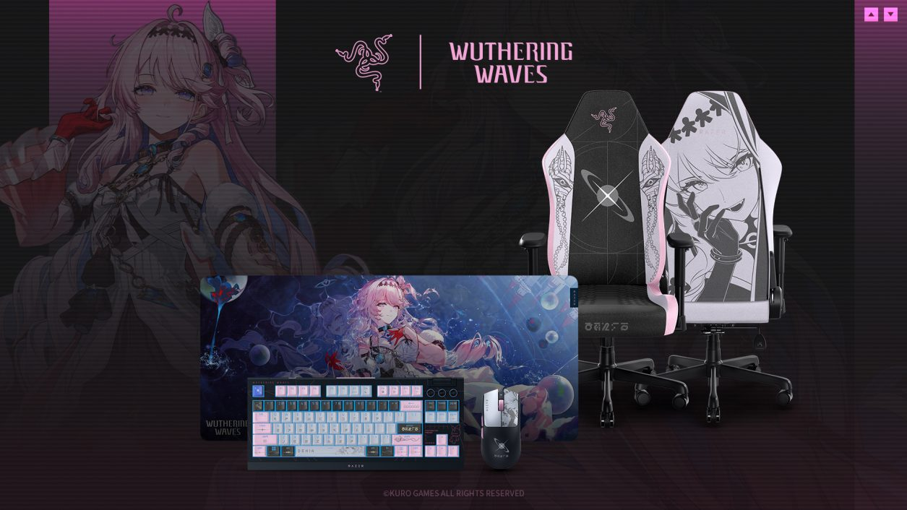
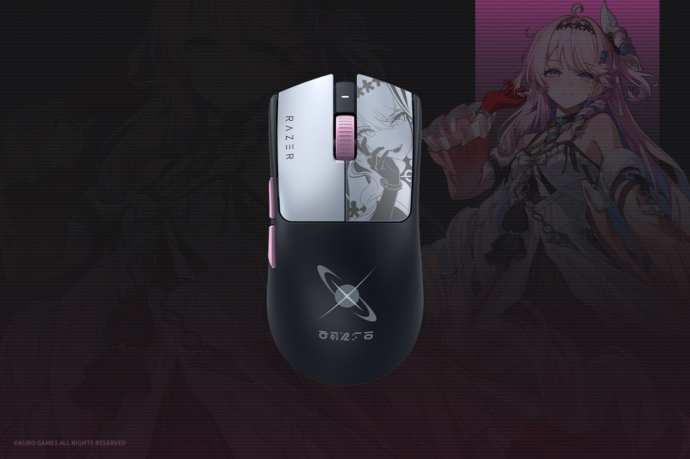
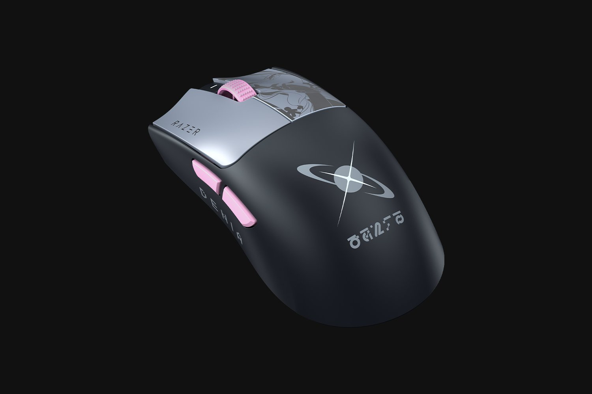
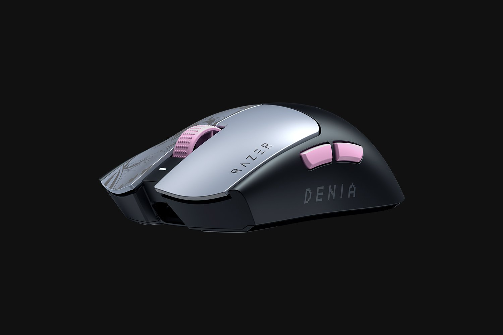
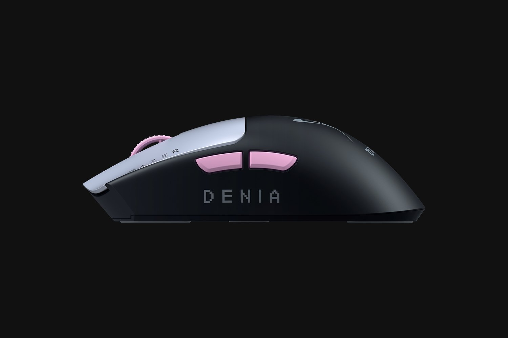

레이저 명조 워더링 웨이브 콜라보 바이퍼 V3 프로 SE, 데니아 에디션 스펙·가격 총정리
안녕하세요. 영원한도시입니다. 저는 마우스를 살 때 무게부터 보는 편인데요, 60g 아래로 내려가면 일단 장바구니에 담고 보는 버릇이 있습니다. 그래서 이번 건은 스펙표를 열자마자 눈이 갔어요. 레이저(Razer)가 쿠로게임즈와 손잡고 내놓은 '명조: 워더링 웨이브' 콜라보 바이퍼 V3 프로 SE - 54g에 가격은 20만 원대입니다.
이 글은 공식 페이지에 올라온 스펙ㆍ가격ㆍ구매 조건을 하나씩 대조해서 정리한 소개글입니다. 특히 게임 내 보상이 품목마다 다르다는 점과 실물 핀 세트 지급 조건은 공식 문구를 그대로 확인해 봤는데, 널리 알려진 것과 다른 부분이 있어서 그 대목을 중심으로 짚어보겠습니다.
1. 레이저 × 명조: 워더링 웨이브, 데니아 콜라보는 어떤 컬렉션인가
한국 공식 표기로는 'Razer | 명조: 워더링 웨이브 컬렉션'이고요, 레이저가 개발사 쿠로게임즈(KURO GAMES)와 손잡고 2026년 7월 2일 공식 발표한 콜라보입니다. 명조: 워더링 웨이브의 최신 공명자(newest Resonator) '데니아(Denia)'를 테마로 잡았고, 구성은 게이밍 체어 '이스커(Iskur) V2 X', 무선 키보드 '블랙위도우(BlackWidow) V4 텐키리스 하이퍼스피드', 무선 마우스 '바이퍼(Viper) V3 프로 SE', 마우스패드 '기간투스(Gigantus) V2 XXL', 이렇게 4종입니다.

체어ㆍ키보드ㆍ마우스ㆍ마우스패드 4종으로 구성된 컬렉션 전체 라인업입니다.
이미지 출처: Razer 공식 보도자료(razer.com/newsroom)
레이저 라이프스타일 부문 글로벌 총괄(Global Head of Lifestyle Division at Razer) 애디 탄(Addie Tan)은 보도자료에서, 데니아의 굳은 의지가 플레이어가 퍼포먼스에 임하는 방식 - 집중력 있고, 정밀하고, 끝까지 버티는 - 으로 자연스럽게 이어진다고 설명했습니다.
그리고 이 컬렉션은 품목마다 명조: 워더링 웨이브 게임 내 보상이 따로 붙는데요, 여기서 하나 짚고 갈 게 있습니다. 공식 컬렉션 페이지를 보면 품목별로 주는 게 다르고, 4종 전부가 같은 걸 받는 게 아닙니다. 주인장이 직접 대조해 본 내용은 아래 표와 같습니다.
| 품목 | 구매 시 따라오는 게임 내 보상 |
|---|---|
| 마우스(바이퍼 V3 프로 SE) | SIGIL |
| 키보드(블랙위도우 V4 TKL) | SIGIL + ASTRITE + 고급 에너지 코어 |
| 체어(이스커 V2 X) | SIGIL + ASTRITE + 고급 공명 물약 |
| 마우스패드(기간투스 V2 XXL) | ASTRITE + 쉘 크레딧 (SIGIL 없음) |
※ 2026년 7월 27일 기준, Razer 공식 콜라보 컬렉션 페이지(razer.com/kr-kr/collabs/wuthering-waves)의 품목별 안내 문구 기준입니다. 보상 이름은 공식 페이지에 영문(SIGIL·ASTRITE 등)으로만 표기돼 있어, 한국어 표기는 게임 내 정식 명칭과 다를 수 있습니다.
보시다시피 마우스패드만 SIGIL이 빠져 있습니다. 실(SIGIL)이 목적이라면 마우스패드 단품이 아니라 마우스나 키보드 쪽을 봐야 한다는 뜻이라, 이건 구매 전에 꼭 확인하셔야 할 부분이에요.
실물 굿즈 쪽도 하나 더 있습니다. 공식 컬렉션 페이지 약관에 'Razer Denia 핀 세트 – Wuthering Waves 에디션'이 안내돼 있는데, 조건은 사전예약이 아니라 '구매 시 증정'입니다. 지정된 바이퍼 V3 프로 SE 명조 에디션 또는 마우스 번들을 사면 주는 방식이고요, 키보드를 사면 이건 'Razer Denia 라지 핀'이라는 다른 품목으로 바뀝니다. 다만 이 혜택은 RazerStore에서 구매한 경우에만 적용된다고 약관에 명시돼 있으니, 다른 경로로 사실 계획이라면 감안해 두시는 게 좋습니다.

마우스 상판 데코와 데니아 캐릭터 아트가 나란히 놓인 컷입니다.
이미지 출처: Razer 공식 제품 페이지(razer.com/kr-kr)
2. 바이퍼 V3 프로 SE 데니아 에디션, 핵심 스펙부터 짚어보면
먼저 표로 한 번에 정리하고 가겠습니다.
| 항목 | 바이퍼 V3 프로 SE(데니아 에디션) |
|---|---|
| 무게 | 54g |
| 쉐입 | 오른손잡이용 대칭형(Right-handed Symmetrical) |
| 센서 | 포커스 프로(Focus Pro) 35K 옵티컬 센서 2세대 |
| 최대 DPI | 35,000 DPI |
| 추적속도 / 가속도 | 750 IPS / 70G |
| 스위치 | 레이저 옵티컬 마우스 스위치 3세대 |
| 클릭 수명 / 액추에이션 | 9천만 회 / 0.2ms |
| 프로그래밍 가능한 컨트롤 | 8개(공식 표기 기준) |
| 폴링레이트 | 기본 1,000Hz / 최대 8,000Hz(하이퍼폴링 동글 별매) |
| 배터리 | 최대 95시간(1,000Hz 기준) |
| 연결 | 하이퍼스피드 무선 + USB Type-A to Type-C 유선 겸용 |
※ 2026년 7월 27일 기준, Razer 공식 제품 페이지(razer.com/kr-kr) 표기 기준입니다. 하드웨어 스펙은 표준 바이퍼 V3 프로 SE와 동일합니다.
이제 숫자를 하나씩 풀어볼게요. 무게는 54g 초경량입니다. 센서는 레이저 포커스 프로(Focus Pro) 35K 옵티컬 센서 2세대를 얹었는데, 최대 35,000 DPI에 750 IPS 추적속도, 최대 70G 가속도까지 잡아줍니다. 숫자만 나열하면 감이 잘 안 오실 텐데, 정리하면 저속으로 세밀하게 조준하는 상황부터 화면을 빠르게 훑는 순간까지 센서가 놓치지 않고 다 따라온다는 뜻입니다.

블랙 바디에 은색 클릭부, 핑크 포인트가 들어간 사이드 버튼ㆍ스크롤휠 구성입니다.
이미지 출처: Razer 공식 제품 페이지(razer.com/kr-kr)
버튼 이야기는 표기를 한 번 짚고 가야 합니다. 레이저 공식 페이지는 '프로그래밍 가능한 8개의 컨트롤'이라고 적어 두는데요, 실제로 손에 닿는 물리 버튼은 좌ㆍ우클릭, 휠 클릭, 상단 DPI 버튼, 사이드 버튼 2개로 6개입니다. 휠의 위ㆍ아래 스크롤까지 할당 가능한 컨트롤로 세느냐 마느냐의 차이라, 공식 표기 기준으로는 8개라고 알아 두시면 됩니다. 클릭에는 레이저 옵티컬(광학식) 마우스 스위치 3세대가 들어갔고, 9천만 회 클릭 수명에 0.2ms 액추에이션이라 스펙상 클릭 지연이 거의 없는 쪽으로 잡혀 있습니다.

사이드 버튼 아래 새겨진 'DENIA' 워드마크가 보이는 컷입니다.
이미지 출처: Razer 공식 제품 페이지(razer.com/kr-kr)
폴링레이트는 동봉된 하이퍼스피드(HyperSpeed) 무선 동글 기준 1,000Hz가 기본입니다. 여기서 별매인 하이퍼폴링(HyperPolling) 무선 동글을 따로 연결하면 최대 8,000Hz까지 끌어올릴 수 있는데, 이 동글은 마우스에 기본 포함된 게 아니라는 점은 짚고 가야겠습니다. 배터리는 1,000Hz 기준 최대 95시간이고, 연결은 레이저 하이퍼스피드 무선에 USB Type-A to Type-C 유선 겸용까지 지원합니다.
3. 가격 - 표준 모델보다 얼마나 비싼가
가격은 201,600원입니다(razer.com/kr-kr · 2026년 7월 27일 기준). 같은 사이트, 같은 시점을 기준으로 콜라보가 아닌 표준 바이퍼 V3 프로 SE 블랙 모델 가격은 159,000원인데요. 계산해 보면 이번 명조 콜라보 데코에 붙는 프리미엄이 42,600원 정도인 셈입니다.

옆면에 새겨진 'DENIA' 각인은 표준 모델엔 없는 콜라보 에디션만의 포인트입니다.
이미지 출처: Razer 공식 제품 페이지(razer.com/kr-kr)
하드웨어 스펙(센서ㆍ스위치ㆍ폴링레이트ㆍ배터리) 자체는 표준 모델과 동일하고, 콜라보 에디션에만 데니아 테마 도장ㆍ사이드 버튼 포인트 컬러ㆍ'DENIA' 각인 같은 외형 요소가 더해진 구조입니다. 순수 성능만 보고 고른다면 표준 모델로도 충분하고, 4만 원대 프리미엄은 사실상 컬렉션ㆍ팬심 값이라고 보는 게 맞습니다.
4. 이 마우스, 누가 사면 좋을까
하드웨어 자체는 앞서 정리한 것처럼 표준 바이퍼 V3 프로 SE와 동일합니다. 그래서 판단 기준도 표준 모델에 대한 평가를 그대로 가져올 수 있는데요.
대칭형 초경량 마우스는 보통 클로 그립ㆍ핑거팁 그립 위주로 플레이하는 경쟁형 게이머에게 잘 맞는다고 알려져 있습니다. 바이퍼 V3 프로 SE도 오른손잡이용 대칭형(Right-handed Symmetrical) 쉐입에 54g 초경량 무게라 이 조합에 해당하고요, 특히 옵티컬 스위치 특유의 클릭 지연 없는 반응성은 FPSㆍ에임 슈터 계열에서 강점으로 꼽힙니다. 반대로 팜 그립을 선호하거나 손이 큰 편이라 묵직한 마우스를 찾는다면, 이 라인업보다는 무게가 더 나가는 다른 모델을 먼저 보는 게 나을 수 있습니다.
정리하면 이 제품은 아래 두 부류에 가장 잘 맞습니다.
- 명조: 워더링 웨이브 팬이면서 데스크 셋업까지 테마로 맞추고 싶은 사람
- 클로ㆍ핑거팁 그립으로 가볍고 반응 빠른 마우스를 찾던 경쟁형 게이머
참고로 이 쉐입은 오른손잡이용 대칭형(Right-handed Symmetrical)이라, 왼손잡이시라면 손 모양 자체가 안 맞을 수 있으니 구매 전에 이 부분도 한 번 체크해 보시는 게 좋습니다.
5. 한눈에 비교
| 구분 | 명조 콜라보 데니아 에디션 | 표준 바이퍼 V3 프로 SE(블랙) |
|---|---|---|
| 가격 | 201,600원 | 159,000원 |
| 차액(프리미엄) | +42,600원 | |
| 하드웨어 스펙 | 동일(센서ㆍ스위치ㆍ폴링레이트ㆍ배터리) | |
| 디자인 | 데니아 테마 도장 + 'DENIA' 각인 | 기본 블랙 |
| 마우스+패드 번들 | Viper V3 Pro SE Bundle - Wuthering Waves Edition 정가 323,600원 → 할인가 291,700원(재고 부족) | |
※ 2026년 7월 27일 기준, Razer 공식 제품 페이지(razer.com/kr-kr) 표시 가격 기준입니다. 번들은 정가에서 할인이 적용된 상태로 표시되며, 할인율ㆍ재고는 시점에 따라 바뀔 수 있으니 구매 전 공식 페이지에서 다시 확인해 주세요.
6. 구매 방법과 지금 재고 상태
결론부터 말씀드리면 2026년 7월 27일 기준으로 마우스와 번들은 지금 바로 결제가 안 됩니다. 주인장이 직접 레이저 코리아 페이지를 하나씩 눌러 본 상태를 표로 정리했습니다.
| 품목 | 제품 페이지 상태 | 지금 할 수 있는 것 |
|---|---|---|
| 마우스(데니아 에디션) | 재고 부족 | 재입고 알림 신청 |
| 마우스+패드 번들 | 재고 부족 | 재입고 알림 신청 |
| 키보드(블랙위도우 V4 TKL) | 컬렉션 페이지에 '선주문' 표시 | 개별 페이지에서 재고 확인 |
| 체어(이스커 V2 X) | 컬렉션 페이지에 '구매하기' 표시 | 개별 페이지에서 재고 확인 |
※ 2026년 7월 27일 확인 기준. 콜라보 컬렉션 페이지(razer.com/kr-kr/collabs/wuthering-waves)의 버튼 라벨과 각 제품 페이지의 재고 표시를 함께 대조한 결과이며, 재고 상태는 수시로 바뀝니다.
여기서 헷갈리기 쉬운 게, 컬렉션 페이지에는 '선주문'이라고 떠 있어도 개별 제품 페이지로 들어가면 '재고 부족'인 경우가 있다는 점입니다. 실제 결제가 되는지는 결국 개별 제품 페이지에서 확인해야 해요. 마우스패드는 단품 페이지 없이 마우스와 묶인 번들로만 팔리니, 패드가 목적이시라면 번들 쪽을 봐야 합니다.
자주 묻는 질문
Q. 하이퍼폴링 무선 동글은 따로 사야 하나요?
네, 별매입니다. 마우스에 기본 동봉된 하이퍼스피드 동글은 1,000Hz 폴링레이트까지만 지원하고, 8,000Hz까지 끌어올리려면 하이퍼폴링 무선 동글을 별도로 구매해 연결해야 합니다. 명조 콜라보 데니아 에디션도 예외는 아니라서, 8,000Hz 폴링이 꼭 필요하시다면 동글 구매 비용까지 감안해서 예산을 잡으시는 게 좋습니다.
Q. 실(SIGIL)만 목적이라면 제일 싸게 가는 방법은 뭔가요?
공식 안내 기준으로 SIGIL이 붙는 품목은 마우스ㆍ키보드ㆍ체어 셋이고, 마우스패드는 ASTRITE와 쉘 크레딧만 붙습니다. 이 중 가장 저렴한 게 마우스(201,600원)라, SIGIL이 목적이라면 마우스가 최소 비용 경로가 됩니다. 다만 실물 핀 세트까지 챙기려면 RazerStore에서 구매해야 한다는 조건이 따로 붙어 있으니, 두 가지를 같이 노리신다면 구매처를 먼저 확인하시는 게 좋습니다.
참고한 곳
· Razer 공식 제품 페이지(영문)
· Razer 공식 제품 페이지(한국)
· Razer 공식 보도자료
· Razer 공식 콜라보 컬렉션 페이지(한국)
▶ 같이 보면 좋은 글: 레이저 포켓몬 콜라보 게이밍기어 4종 출시, 에브이·블래키 에디션 총정리 (네이버에서 해당 글 링크를 직접 넣어 주세요)
▶ 같이 보면 좋은 글: 로지텍 G304 X SUPERLIGHT 국내 출시, 59g 초경량 무선마우스 스펙 총정리 (네이버에서 해당 글 링크를 직접 넣어 주세요)